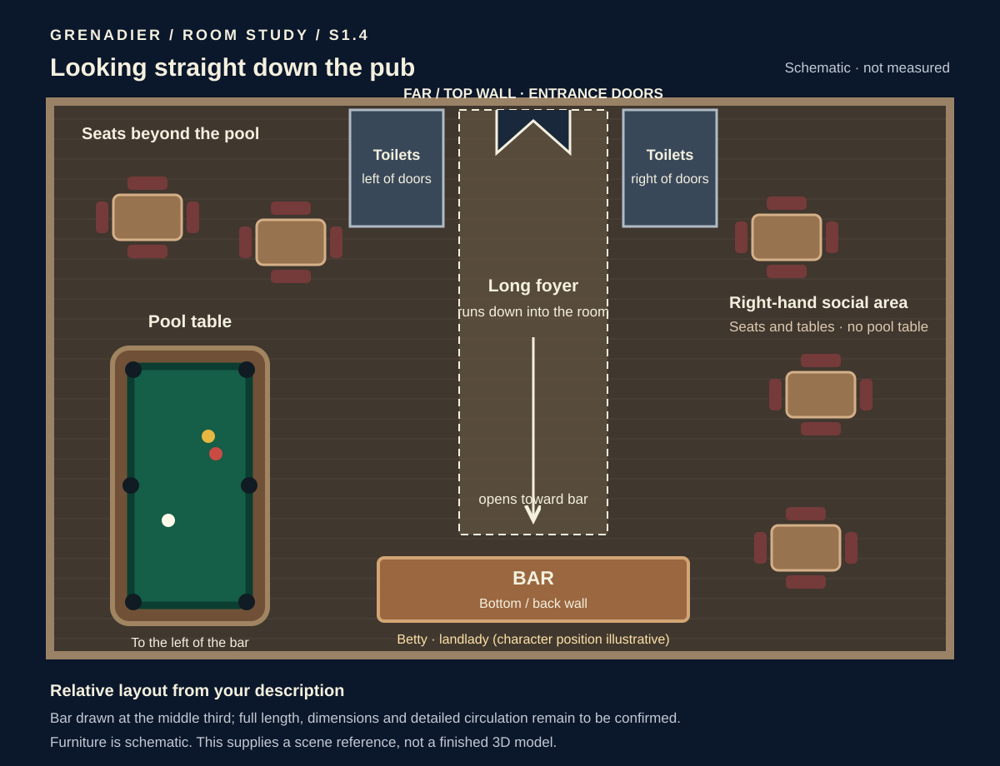

1998 Sports Broadcast. Fullscreen table with temporary captions. Pixelated friend caricatures. One live resumable match, spin control, postgame knockabout, and Betty keeping an eye on the pub.
01 / The four players
Individual avatars derived from the group illustration you liked, in the same left-to-right order. Open any portrait to see the full asset.
The approved group illustration →
{kind=link}
02 / Through the doors
Entrance on the far wall. Toilets immediately to either side. A long foyer opens into the room toward the bar at the opposite end. The pool table and social areas retain their positions.

The layout follows your description. Furniture and dimensions remain schematic for a later room model.
03 / The broadcast look
The table stays clear while aiming; the captions fade back and Abort remains visible. The mockup below is a static visual study.
Ready to close the design
No further design choices block this review. The remaining check is whether the individual avatars and corrected floor plan look right. Gesture tuning, exact house rules, timeout options and Betty’s barring behaviour belong to later playable work.